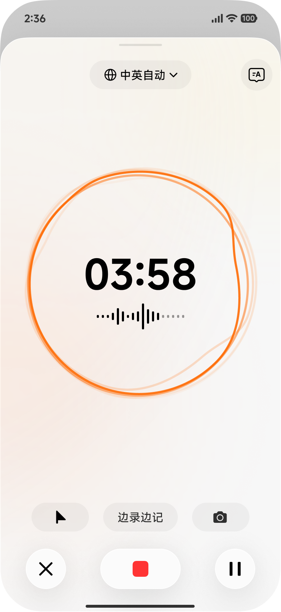
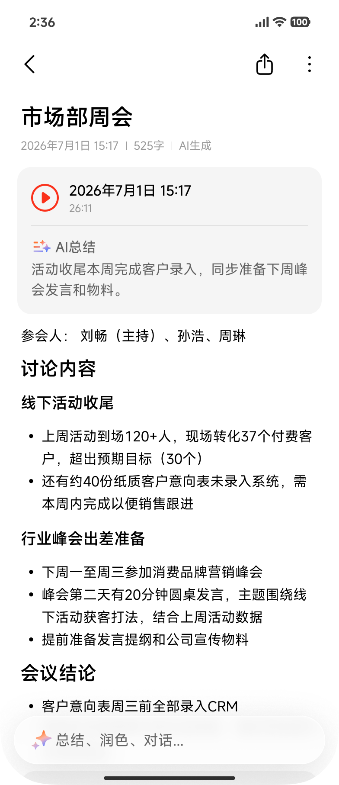
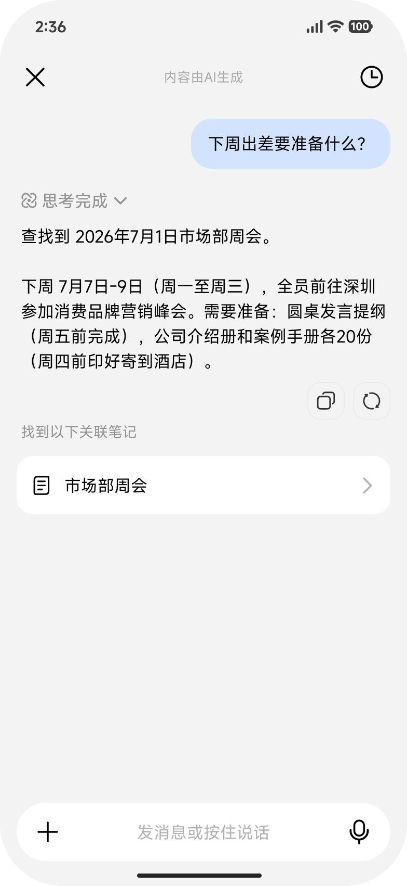

SUPER XIAOAI
超级小爱2.0
全生态 AI 专属助手
正在编辑 · 当前段落
这段写得太长，需要更简洁、正式一点。
✦ 精简并改写
很懂你
知道你在写什么、想改哪里
小爱已整理
会议结论3 个决策 · 4 项待办已生成结构化纪要
插入当前笔记
很强大
长内容直接总结、写作、整理
AI 应用 · 这次变更
小爱进入笔记，AI 不再躲在功能菜单里
过去要先想“该点哪个 AI 功能”；现在小爱就在编辑现场，跟着当前内容给出下一步。
BEFORE · 单点工具
写完以后，再去找 AI
- 总结、改写、续写分散在不同入口
- 先选功能，再告诉 AI 要处理什么
- 每次只完成一个孤立动作
→
NOW · 笔记里的小爱
写到哪，小爱就跟到哪
- 空白时帮你开始，不用盯着空页
- 写一半帮你接着写，沿用当前上下文
- 选中一段就改这一段，结果可预览
XIAOMI NOTES × SUPER XIAOAI
AI 应用 · 长内容处理
长笔记不再自己翻，小爱直接提炼成可用结果
一篇会议记录，从完整留下，到自动整理，再到一句话问回关键结论。
01 · 看懂整篇
会议内容完整留下
录音与文字对齐，当前笔记就是小爱的上下文

›
02 · 自动整理
提炼结论和待办
重点、结论、分歧、谁来做，直接整理清楚

›
03 · 随时追问
问一句，答案回到原文
不靠关键词翻找，回答同时标出内容来源

“帮我总结这次会议，列出结论和待办”
XIAOMI NOTES × SUPER XIAOAI
AI 应用 · 伴随写作
写不出来、写到一半、写完要改，小爱都能接上
不是摆一排 AI 按钮，而是根据笔记当前状态，直接给最需要的下一步。
01 · 还没写
帮你开始
说一句主题，直接起稿
9:41100%
‹↶ ↷ ✓
未命名笔记
今天 10:29 ｜ 0 字
开始书写，或说出你的想法
写一段列清单记要点
✦ 小爱🎙✎☑T
02 · 写一半
帮你写下去
顺着已有内容扩写、补全
9:41100%
‹↶ ↷ ✓
直播间的信任
今天 16:20 ｜ 写了一半
直播间的信任，靠主播每天准点出现攒下来。但光准点还不够，还得
扩写成段补个案例换个开头
✦ 小爱🎙✎☑T
03 · 选中一段
帮你改好
选中哪里，就只改哪里
9:41100%
‹↶ ↷ ✓
直播间的信任
今天 16:22
真正的信任，是观众知道你一定在——每天准点只是开始，长期稳定才行。
✦ 小爱🎙✎☑T
XIAOMI NOTES × SUPER XIAOAI
小米笔记 × 超级小爱
在笔记里，小爱随时帮你找、理、写、改
同一个入口，理解当前笔记和选中内容；你说想要的结果，小爱直接在笔记里完成。
本周产品进展
今天 17:40 ｜ 860 字
本周完成产品方案第一轮评审，会上重点讨论了入口、生成质量与结果回写……
当前需要继续确认首版范围、评测标准和协同排期。
很好找“上次评审最后定了什么？”从笔记内容中回答，并回到原文
很强大“把这篇整理成汇报”提炼重点，生成可继续编辑的完整结果
很懂你“把我选中的这段写得更正式”理解当前笔记和选区，只修改指定内容
来源可查看原文可保留修改可撤回
不是多了几个 AI 功能，而是小爱真正进入了笔记的记录、整理和写作过程
XIAOMI NOTES × SUPER XIAOAI